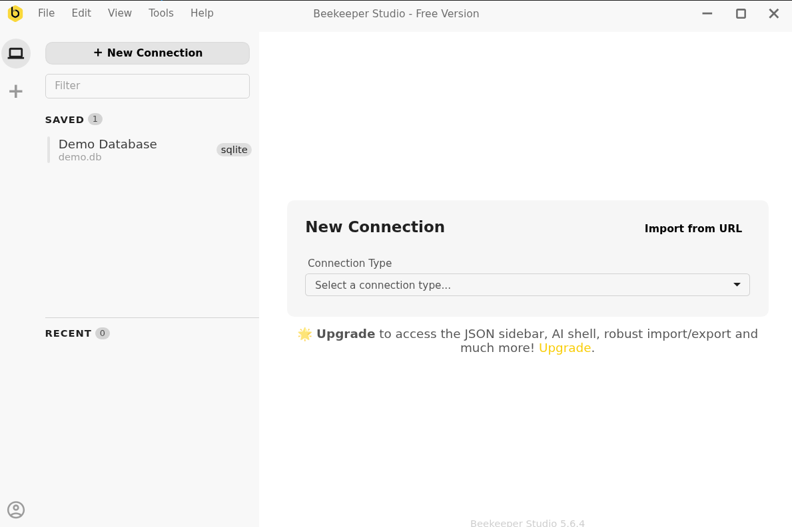
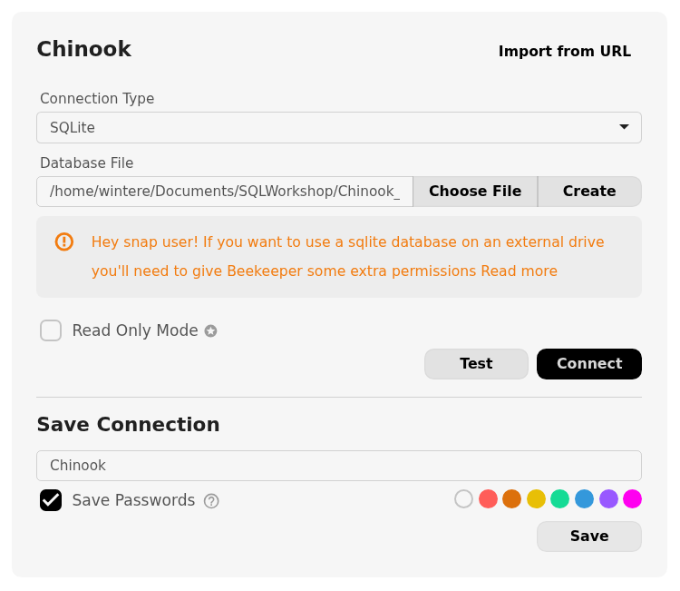

Setup
Why Beekeeper Studio?
This workshop uses the community version of Beekeeper Studio for the simplicity of its user interface, which makes it easy for beginners to foucs on learning SQL syntax and relational database structure without being overwhelmed by the features intended for database administators available in commercial database management software.
Once you’ve learned a little SQL, I would encourage you to branch out to a more powerful tool. The final lesson in this workshop will introduce alternatives that are free to users with a university affiliation. There are differences in SQL dialects, but almost everything you learn in this workshop can be translated to a different SQL engine or different database management system.
Install Beekeeper Studio Community Edition
MacOS
Depending on when you bought your laptop, your Mac may have an Apple Silicon chip or an Intel Chip. For Beekeeper Studio to work correctly, you must install the version that corresponds to your laptop’s chip.
Identify Your Processor Type
- Click on the Apple icon in the top left corner of your screen.
- Select About this Mac.
- Look at the line labeled Chip.
- If your chip name begins with Apple, it is an Apple Silicon processor.
- If your chip name begins with Intel, it is an Intel processor.
Download and Install Beekeeper Studio
- Go to beekeeper-studio.io
- Click Download.
- Click Skip to the download.
- Download the Mac app version that corresponds to your processor type to your Desktop.
- Navigate to your Desktop and double-click the .dmg file.
- A window will prompt you to drag the Beekeeper Studio app to your Applications folder.
- Use Go->Applications to open your Applications folder.
- Click Beekeeper Studio.app.
Windows
- Go to beekeeper-studio.io
- Click Download.
- Click Skip to the download.
- Download the Windows Installer to your Desktop.
- Run the
.exeinstaller. - When prompted, choose to install the application only for you.
- After the installer finishes, you will be prompted to launch Beekeeper Studio.
- In the future, you can launch the program for the Windows Start Menu.
Download the Sample Database: The “Chinook” Music Store
Real-world relational databases are typically run on a server, a continously running computer accessible by many users or programs simultaneously. However, for teaching purposes, we will be using a lightweight database format called SQLite. SQLite is a program that can read (and write) a database to a specially formatted file stored on your computer. SQLite is used in mobile apps and other smart devices to store and manage data because it is simple, portable, and compact.
The Chinook database represents purchase records for a digital media store, including tables for artists, albums, media tracks, invoices and customers. Think of it as a miniature version of the iTunes Music Store. While the names of the bands and albums in the dataset are real, the purchase information is completely fictional. This dataset is popular for teaching because it’s open-source, demonstrates good database design principles, and gives students the opportunity to practice a variety of SQL features. I have simplified the database slightly to fit the time frame of this workshop.
SQLite requires a .sqlite file to run, so you will need to save this file somewhere in a location you can remember.
Make a new folder named SQLWorkshop in your Documents folder or on your Desktop. Keep track of this folder for the duration of the workshop.
Click the button below to download a copy of the Chninook database to your computer. Save or copy the file to your SQLWorkshop folder.
Import the Sample Database into Beekeeper Studio

Now that you have the database file stored in your SQLWorkshop, launch Beekeeper Studio. You will be prompted to create a new database connection.
Select SQLite from the Connection Type drop-down menu. Then, click the Choose File button and select the Chinook_Sqlite.sqilte file inside your SQLWorkshop folder. Give your connection a name you can remember, like Chinook.

Once you’ve completed these steps, click the Test button. If the connection succeeds, click the Connect button.
If the connection test fails, please raise your hand or type in the Zoom chat. Someone will help you troubleshoot your configuration.
Optional: Configure Beekeeper Studio
Congratulations! You’re now set up to do this workshop. If you would like to tailor Beekeeper Studio to your preferences, you can adjust its appearance by going to View -> Theme in the top menu bar.